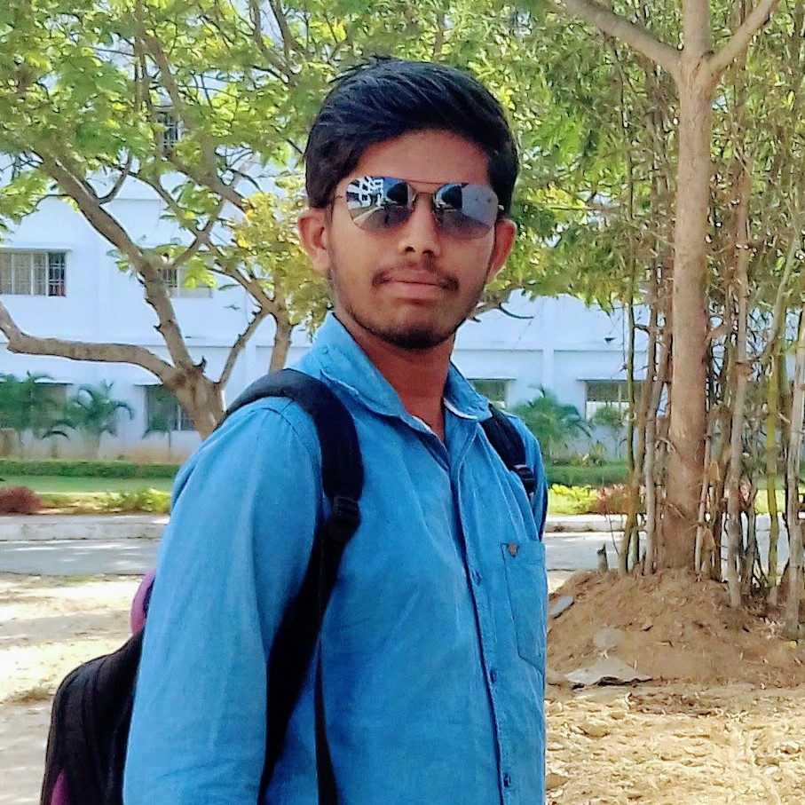

I am Vasanth, Research scholar at IIT Guwahati, Assam. joined in December 2021, Currently finding research objectives.
I am working on Scheduling problems related to IOT/ Edge/ Cloud computing in the Department of Computer Science and Engineering, IIT Guwahati. under the guidance of Dr. Aryabartta sahu
I am a Recipient of kum UGC-JRF Fellowship.
Experience:
1. Teaching Assistant for CS110 Computing Lab (Mar-June 2022)
2. Teaching Assistant for CS110 Computing Lab (Mar-May 2023)
3. Teaching Assistant for CS528 : High Performance Computing (Jan-May 2023)
4. TBD (Jul-Nov 2023)
Previous Education:
1. M.Sc Computer Science from Sri Venkateswara University, Tirupati.
2. B.Sc Computer Science from Kuppam Degree College, Kuppam. affilated to Sri Venkateswara University, Tirupati.